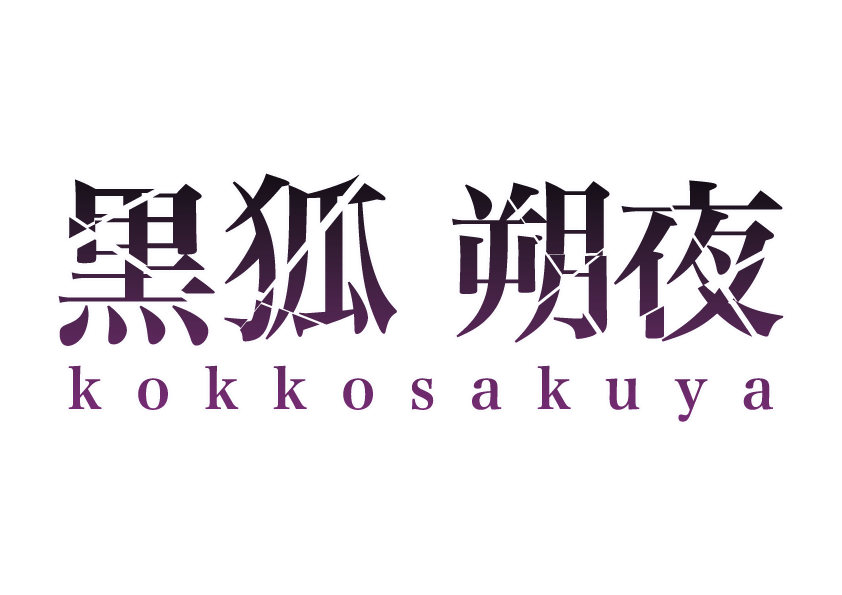

PORTFOLIO
MY CREATIVE PORTFOLIO
Welcome
SCROLL
↓
SELECTED WORKS / 01
project
.
横にスワイプ · 作品をタップで詳しく見る
←
01 / ゼミプロジェクト
チータープリン
プロジェクトを見る ↗
→
SELECTED WORKS / 02
logo
.
横にスワイプ · 作品をタップで詳しく見る
←
01 / 2026年
鳳翔朔夜
Logo Design · 作品を見る ↗

02 / 2026
黒狐 朔夜
作品を見る ↗
03 / 2026
燗月 醉燈
作品を見る ↗
04
秋のタイポグラフィ
作品を見る ↗
05
ゴールデンウィークのタイポグラフィ
作品を見る ↗
06
宮津線100周年ロゴ
作品を見る ↗
07
海のタイポグラフィ
作品を見る ↗
→